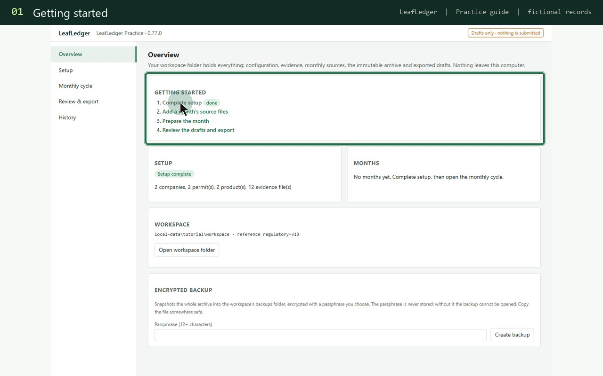

SOFTWARE WORKFLOW · LEAFLEDGER
TTB 5220.6 Tobacco Importer Reporting Software
For tobacco importers preparing recurring monthly reports: bring customs, inventory, and accounting evidence into one reviewable workflow. LeafLedger prepares supported report drafts on your Windows computer; your team reviews and files them.
Try LeafLedgerStart with the reporting period and permit
Keep each reporting period and permit identity clear before combining records. Collect the source documents that explain opening balances, receipts, removals, adjustments, and closing balances applicable to your operation. Preserve the original documents alongside the working data.
Reconcile the records before filling the form
Customs entries, inventory movements, and accounting transactions may describe the same activity at different times or in different units. Compare the underlying records and record the reason for differences. A matching grand total does not explain an incorrect product classification or a missing movement.
Review the draft and its exceptions
LeafLedger flags missing or inconsistent inputs for review rather than guessing product classes, permit identities, tax amounts, or unit conversions. Resolve the source-data issue, regenerate the draft, and retain the evidence behind the final figures. A zero-activity period needs an explicit declaration; a missing file does not establish zero activity.
A practical month-end handoff
Give the reviewer the report draft, source-file list, reconciliation output, and unresolved-item list together. Record which period was reviewed and keep the final version separate from earlier working drafts. This makes a later question about a reported number easier to answer.

Example month-end review
Illustrative review worksheet — fictional records. This explains the workflow; it is not a screenshot or a generated product report.
| Source record | Review item | Next action |
|---|---|---|
| Customs entry IMP-104 | Product unit differs from inventory unit | Confirm a documented conversion |
| Inventory movement INV-208 | Source document missing | Attach the supporting record |
| Accounting batch AC-031 | Period differs from report month | Explain and reconcile the timing |
Questions before you start
Does LeafLedger file TTB Form 5220.6 for me?
No. It prepares and validates supported report drafts. Your business remains responsible for reviewing the figures, signing where required, and submitting the report.
Is this the same workflow as a manufacturer report?
No. The importer form and manufacturer form serve different operations. Confirm the applicable form and current instructions for your permit and activity.
Can I see the software before starting?
Yes. The product tutorial and fictional practice workspace explain the workflow before you use your own records.
See the workflow in context
Try LeafLedgerOfficial reference
Use importer instructions, not a manufacturer template
Confirm the activity and product-class fields on the current importer form. Do not copy the 5210.5 manufacturer inventory structure into 5220.6. Keep the customs references and reporting basis that support each imported quantity.
Work through a fictional customs-to-accounting mismatch. Once it is explained, review the draft alongside the evidence and retain the final submission separately.
TTB lists the importer report deadline as the 15th of the following month; confirm the current instructions for your permit and activity.